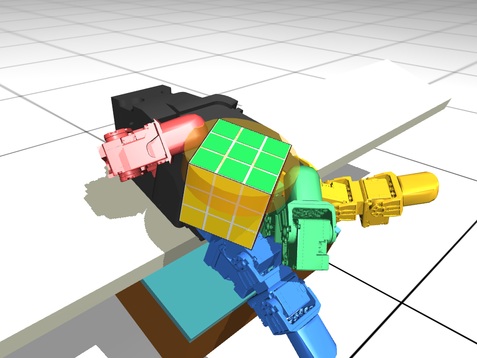
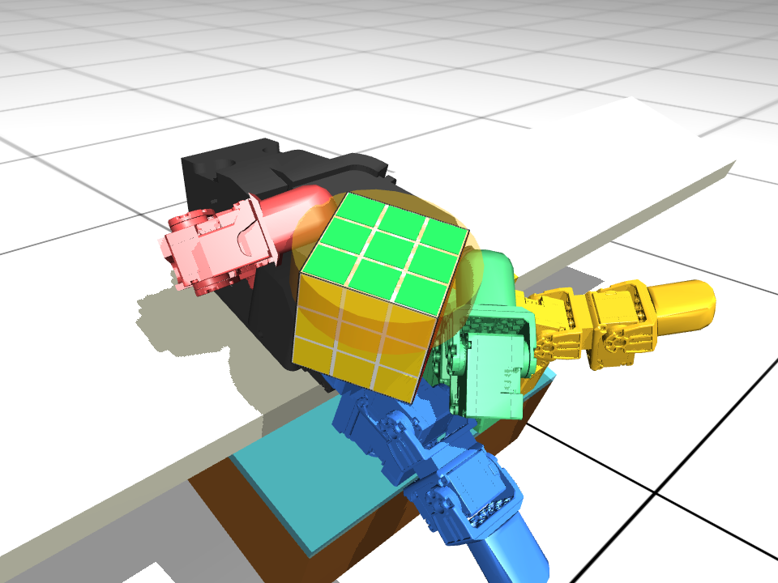

초록=중지, 빨강=엄지, 파랑=검지, 노랑=약지.
실제 로봇 영상이 아닌 기준 모델의 자유 큐브 시뮬레이션이다. 이번 동작은 중지 쪽 공간과 큐브 유지를 관찰한다. 완성된 하부 파지나 윗단 회전은 아직 확인하지 않았다. 정지 그림의 주황 원통은 윗단 회전 공간 표시다.
기존 파지 고정 → 중지만 약 3.6초 접기 → 약 5초 고정 → 중지 복귀. 영상은 원래 속도다. 전체 프로그램은 빈손 준비와 큐브 제거를 포함해 약 4분 걸린다.

